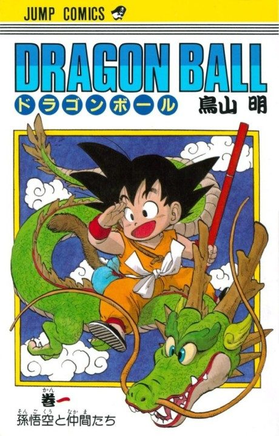

MangaAdapted
Anime
MangaAdapted
Anime
MangaDragon Ball Z
ドラゴンボールZ
AniList8.1
Animeter—
5 seasons508 ep
MangaAdapted
Key events
These are spoilers. They stay blurred until you reveal them, one at a time or all at once.
Raditz Saga Ep 1–6
- Raditz reveals that Goku is a Saiyan sent to conquer Earth.
- Goku and Piccolo team up against Raditz, and Goku dies holding him in place.
- Piccolo takes the young Gohan away to train him for the coming Saiyans.
Vegeta Saga Ep 7–35
- Goku trains with King Kai on his tiny planet after crossing Snake Way.
- Nappa and Vegeta arrive; a Saibaman kills Yamcha and Nappa kills Tien, Chiaotzu and Piccolo.
- Goku returns and, with Gohan and Krillin, drives a badly injured Vegeta off Earth.
Namek Saga Ep 36–67
- Frieza's forces are already on Namek hunting the Dragon Balls.
- Vegeta turns on Frieza's soldiers and steals Dragon Balls for himself.
- Gohan and Krillin win the favour of Guru, who unlocks their hidden power.
Captain Ginyu Saga Ep 68–74
- Goku arrives and overpowers most of the Ginyu Force.
- Captain Ginyu swaps bodies with Goku, but the trick is undone and he ends up as a frog.
- Vegeta finishes off the remaining Ginyu Force members.
Frieza Saga Ep 75–107
- Frieza kills Vegeta and then Krillin in front of Goku.
- Goku becomes a Super Saiyan for the first time in his rage.
- Namek explodes; Goku escapes in a Ginyu Force pod and Frieza is left for dead.
Garlic Jr. Saga Ep 108–117
- Garlic Jr. infects the population with the Black Water Mist.
- Gohan and Piccolo lead the defence until Garlic Jr. is sealed back in the Dead Zone.
Trunks Saga Ep 118–125
- Future Trunks kills Frieza and King Cold as a Super Saiyan.
- Trunks secretly warns Goku about androids that will devastate the future.
Androids Saga Ep 126–139
- Goku collapses from his heart virus during the fight with Android 19.
- Dr. Gero awakens Androids 17 and 18, who easily defeat Vegeta and the others.
- A second time machine and a strange husk point to another creature from the future.
Imperfect Cell Saga Ep 140–152
- Piccolo fuses with Kami to stand against Cell.
- Cell hunts Androids 17 and 18 to absorb them and complete himself.
- Cell absorbs Android 17.
Perfect Cell Saga Ep 153–165
- Vegeta lets Cell absorb Android 18 out of pride, and Cell reaches his perfect form.
- Cell announces the Cell Games, a tournament for the fate of the Earth.
Cell Games Saga Ep 166–194
- Goku forfeits mid-fight and names Gohan as the one to beat Cell.
- Gohan becomes a Super Saiyan 2 after Android 16 is destroyed.
- Goku sacrifices himself to stop Cell's self-destruct, and Gohan kills Cell with a Kamehameha.
Other World Saga Ep 195–199
- Goku and Pikkon advance through the Other World Tournament.
- The final ends without a clear winner after both fighters touch the ceiling.
Great Saiyaman Saga Ep 200–209
- Gohan adopts the Great Saiyaman identity, and Videl uncovers who he is.
- Gohan teaches Videl to fly before the World Martial Arts Tournament.
- Goku is allowed to return to Earth for one day to enter the tournament.
World Tournament Saga Ep 210–219
- Goten and Trunks win the junior division and fight each other.
- Spopovich badly beats Videl, and the Supreme Kai reveals himself.
- Gohan's energy is stolen for a sinister plan.
Babidi Saga Ep 220–231
- Babidi takes control of Vegeta, who wanted to fight Goku again.
- Majin Vegeta fights Goku, then sacrifices himself against Buu.
- Majin Buu is released from his shell.
Majin Buu Saga Ep 232–253
- Goku reveals Super Saiyan 3 to buy time.
- Buu kills Babidi and sets out to destroy humanity.
- Goten and Trunks learn the Fusion Dance, and Gohan trains with the Z Sword.
Fusion Saga Ep 254–275
- Gotenks fights Super Buu inside the Hyperbolic Time Chamber.
- An empowered Gohan returns and outclasses Super Buu.
- Goku and Vegeta use the Potara earrings to become Vegito.
Kid Buu Saga Ep 276–291
- Kid Buu destroys the Earth and is pursued to the Supreme Kai's world.
- The Earth is restored with the Namekian Dragon Balls.
- Goku finishes Kid Buu with a Spirit Bomb using energy from all of Earth.
- Ten years later Goku meets Uub, Buu's reincarnation, and leaves to train him.